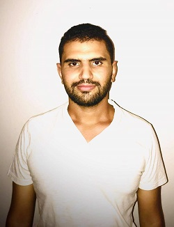

About Me
Greetings

Bio
My name is mohamed amin ben malek,i'm 25 year old,as a full stack web developer,i specialize in developing web applications with reactjs for front-end,nodejs and express for backend and mongoDb for database,If you have the time you may check the projects i made using these technologies in the My projects section. Im passionate,open-minded,hard working and always willing to try my hands at new technologies and skillsets. I’m looking for a good job experience from which I can learn a lot, and therefore I am ready and willing to give the maximum of my efforts in order to provide the best job performance.